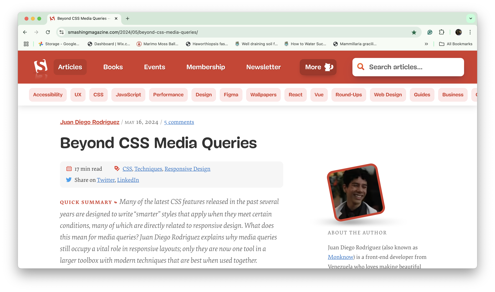

Web Design Research
I chose to read an article that discussed the past and present of CSS media queries in web design (link here). The author discussed how media queries were widely used for responsive designs when smartphones became popular, but are now considered "adaptive" and can work with other features for create responsive websites. Some CSS features mentioned include the flexbox, grid, and other responsive features.
This article provided me with more context to CSS features I have learned and used in DES 117. I like that the author used the word "adaptive" to describe media queries since adding just 1 as we did in this course makes for more awkward layouts between mobile and desktop sizes. I agreed with the sentiment that they can feel overwhelming at times as I have seen my code get long enough that I scroll a lot just to find where I want to make a change. I also found myself in agreement that media queries are just one tool in a web designer's kit as I use flexbox and grid within my queries to create my desired layouts.